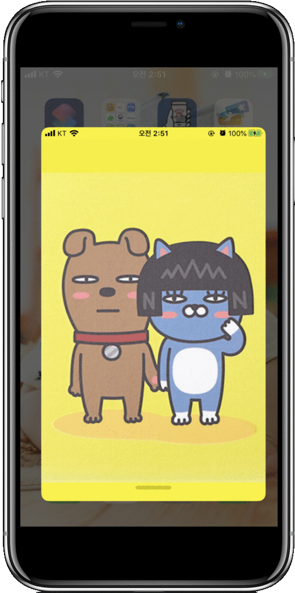

네오의 병원 찾기
아래 링크로 앱을 다운로드 받을 수 있습니다.~
iOS 앱
네오의 병원 찾기
앱 다운로드
이 앱은 SwiftUI로 개발되어 iOS 13.0 이상에서만 설치 하실 수 있습니다.
기본동작
앱 실행 - 초기화면 병원 기본검색.
BottomSheet 상단으로 스윕
검색결과 리스트 확인 및 '더보기' 클릭
지도의 마커 확인
마커 or 리스트 클릭 시 중심이동
마커 볼륜 클릭 시 웹페이지 이동
기타
SwiftUI / Combine
MVVM
Firebase
